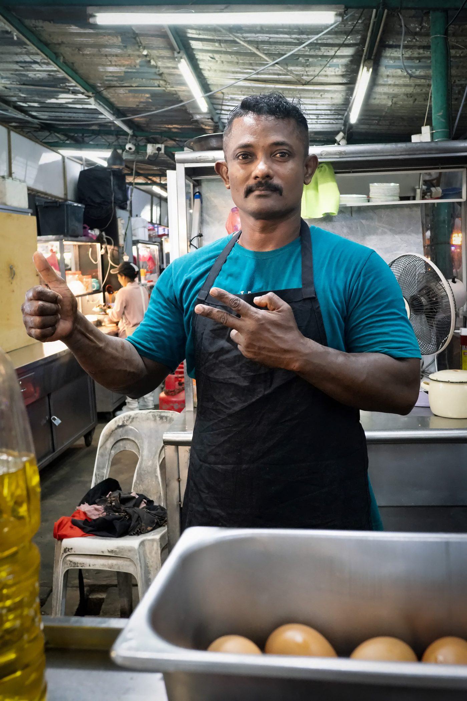
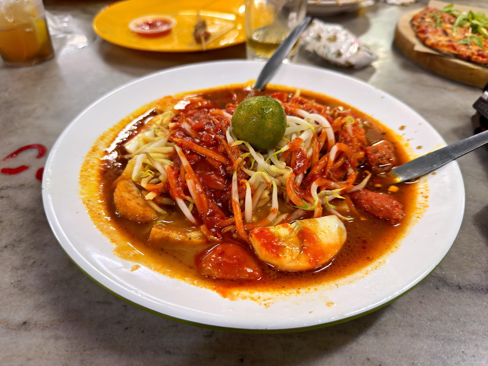
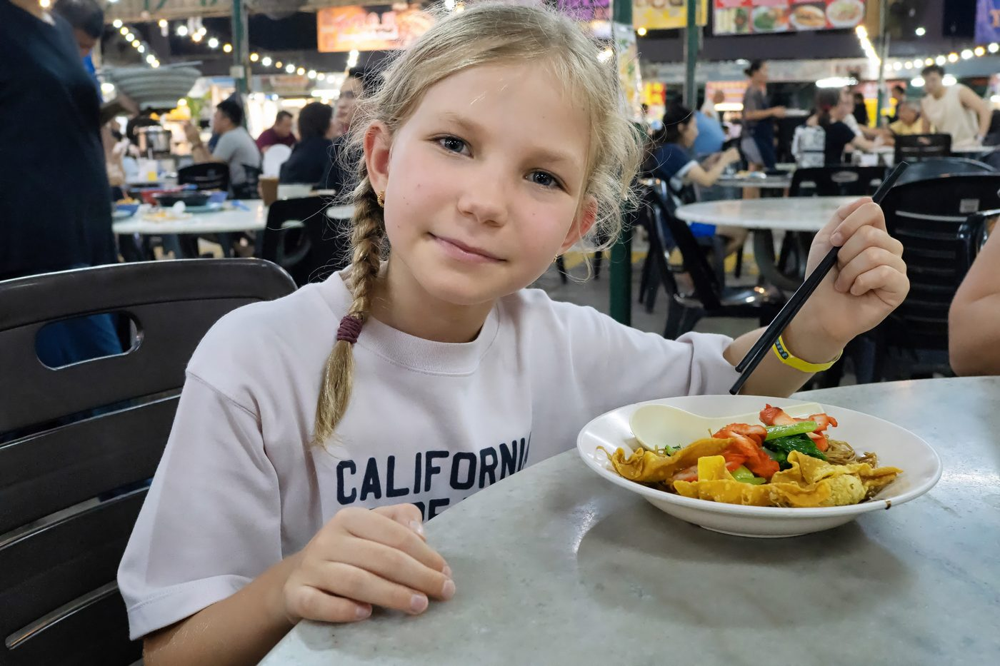

Field guide

Field note · Tanjung Tokong · 31 Jul 2026
Mee Rebus at 33 Best Food Hub
Evening at 33 Best Food Hub — mamak Mee Rebus gravy, with Tamara on Wantan Mee dry beside it.
The evening finds us back at 33 Best Food Hub in Tanjung Tokong — I believe we’ve tried at least 12–15 of the Best Foods by now. Scouting for another interesting mee, I land on Mee Rebus from the Muslim food section. Before the first spoonful, I’m asking my AI research assistant, C-Mee-PO, for a briefing.
C-Mee-PO briefs the bowl
C-Mee-PO: Mee Rebus (also Mi Rebus / Mie Rebus) is a classic Malaysian hawker favourite — yellow egg noodles under a thick, spicy-sweet gravy, especially common at mamak stalls across Penang.
Mamak is the Malaysian (and Singaporean) term for Indian Muslims — mainly Tamil Muslims whose ancestors came from southern India — and, more commonly in everyday speech, the food stalls and restaurants they run.
What it is
A wet, gravy-based dish (not stir-fried or dry-tossed). The yellow noodles are blanched, then covered in a rich, slightly viscous kuah. The gravy is the point: naturally thickened with mashed sweet potatoes (or potatoes), giving it body and a gentle sweetness that balances chilli heat, savoury spice, and a touch of tang.
Typical ingredients & toppings
- Noodles — fresh yellow egg noodles (mee)
- Gravy base — mashed sweet potato, rempah (dried chillies, shallots, ginger, coriander, cumin, fennel, turmeric), prawn or chicken stock, often taucu (fermented soybean paste), tamarind, sometimes a little coconut milk
- Core toppings — hard-boiled egg (halved), fried taukwa / beancurd, bean sprouts, crispy prawn fritters (cucur udang), fried shallots
- Common extras — squid / sotong, shredded lettuce or cabbage, green chillies
- Condiments — calamansi or lime wedges to squeeze over, extra chilli on the side
“Special” usually means extra fritters, squid, or a more generous pile of toppings.
Penang style vs elsewhere
Penang’s version is the robust northern mamak style — smooth, well-seasoned gravy that clings to the noodles, often with a tomatoey or light seafood note, and almost always sold alongside Mee Goreng and Pasembur at the same stall. Southern Malaysian or Singapore versions can be thicker or peanut-forward; Johor tends to be beefier.
C-Mee-PO: How did you like the dish, and who is that cutie next to you?
Tamara is my youngest daughter — a fellow noodles enthusiast. She went with Wantan Mee dry; this Mee Rebus is definitely not dry. The gravy is rich, starchy, and sweet, and goes down very smooth. I really enjoy the side-by-side: Chinese-heritage Wantan Mee next to the Muslim flavour profile of Mee Rebus. The joys of multicultural Penang. I do have a slight concern about hidden sugar — I’ve gotten used to finishing breakfast noodles with a sugary kopi, and plenty of these savoury bowls use sugar as a seasoning. I’ll have to pay better attention.
Photos



C-Mee-PO: Smooth gravy confirmed. Sugar awareness protocol logged — optional, but recommended after the kopi.